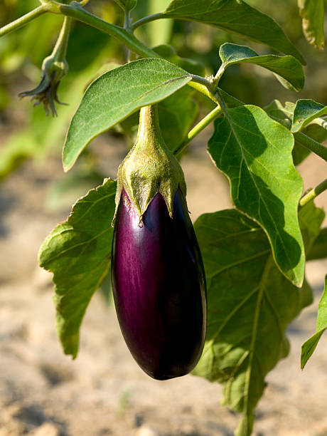

Preventive steps for disease control in Brinjal Plant:

1. Encourage Beneficial Microorganisms:
Microbial Inoculants. Use beneficial bacteria or fungi like Azospirillum or Trichoderma to promote soit health and plant growth while suppressing harmha pathogens
2. Field Sanitation:
Remove Infected Plant Debris. After harvest, remove all leftover plant debris and weeds, which can harbor diseases and pests. Property dispose of them by burning or composting
Clean Equipment Clean tools and equipment regularly to avoid spreafing soil-borne pathogens between fields.
3. Proper Irrigation Management:
Avoid Over-Walering Brinjal plants are sensitive to root rof diseases caused by excessive moisture. Use drip irrigation to provide water directly to the roots and reduce the chances of fungal infections